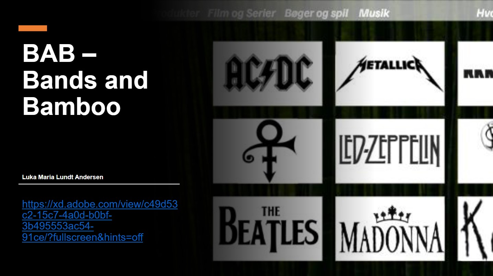
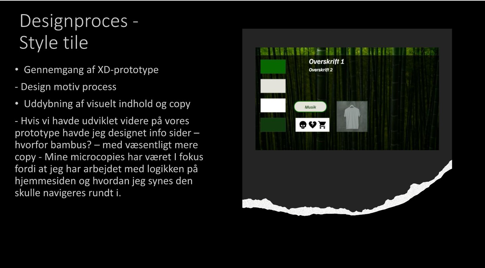

Tema 3
Vi har i dette tema arbejdet med diverse undersøgelsesmetoder for at skabe og senere optimere brugergrænsefladen og oplevelsen på vore prototype for evt kunder. Med fortsættelse på design kompetencer fra forrige tema udviklede vi prototyper i Adobe XD og ved hjælp af diverse research metoder (desk, survey, interview og observation) har vi videreudviklet og færdiggjort vores prototyper til pitch.
Løsning
Der var flere små opgaver i denne samlede opgave. Under denne proces skulle vi igennem mange researchmetoder og dette endte med at give gode værktøjer til videreudvikling af prototypen. Det gav meget at mærke hvilke researchmetoder som gav mening i hvilke situationer i forhold til om det var relevant, om det var kvantitativt eller kvalitativ mm. Vigtigheden af at bruge diverse undersøgelser under sin udviklingsprocess bunder blandt andet i evenen til at være neutral da man hurtigt kan komme til at lave noget man personligt godt kan lide og fordi at logik ikke er det samme for alle.
03.03.02 Pitch
Da prototypen blev færdiggjort skulle den fremlægges. På baggrund af 5 act interviews fik vi hver især en masse feedback og vi byggede vores fremlæggelse på dette. Ved at lave denne pitch fik man reflekteret en del over sin opgave og i mit tilfælde havde jeg forestillet mig evt problematikker men det var nogle helt andre ting der kom feedback på.
 